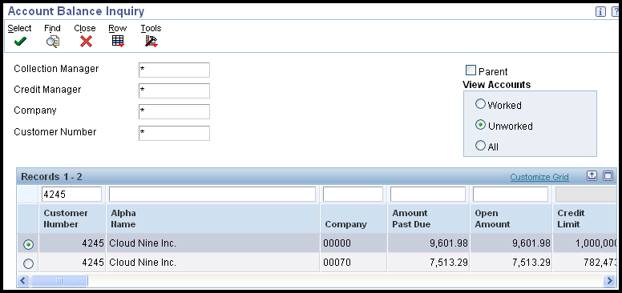
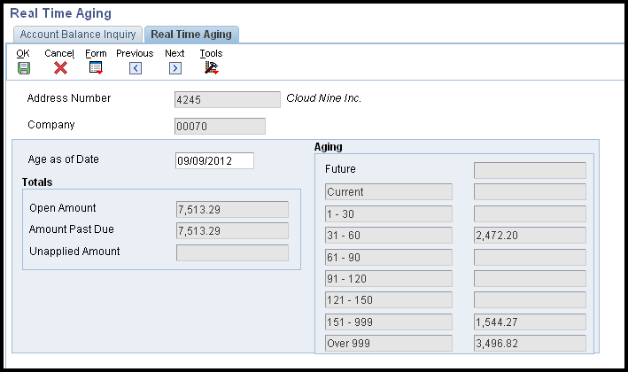
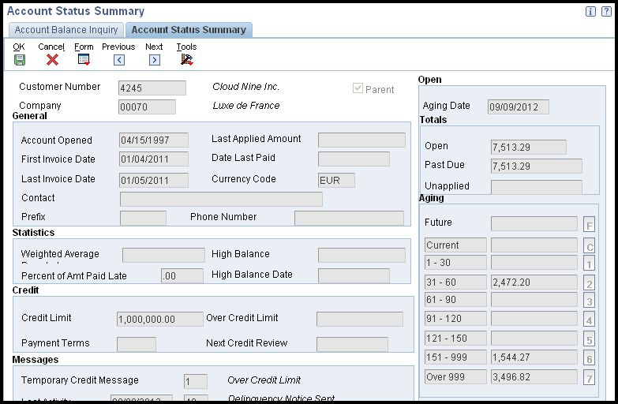

| Purpose |
| Details |
| Overview of Account Balance Information |
| Reviewing Account Balance Information |
| Reviewing Account Information As Of a Specific Date |
| Account Status Summary |
| Reviewing Accounts using Account Status Summary |
| Working Accounts |
| Working an Account Using Account Balance Inquiry |
This document outlines the use of Account Balance Inquiry in JD Edwards EnterpriseOne Accounts Receivable.
When managing customer accounts for credit and collection purposes, you can quickly access and review various types of accounts receivable information that facilitates decision making and customer analysis. For example, you might want to review the open balance of a customer’s account as of a certain date, or the amount of the customer’s balance that is past due.
When you run the Credit Analysis Refresh program (R03B525), the system updates account information in the Credit and Cash Management (F03B15) table (and from release 9.0 it also updates the F03B15 Tag Table (F03B15T) - see Bug 11043633). It displays the records by customer and company on the Account Balance Inquiry (P03B218) form. The system displays account information in order by company. The record for company 00000 represents the total of all company records. In addition to reviewing information here, any past due invoices can generate a workflow message about the customer to the collection manager if this has been set up. See How To Activate Workflow Messages for Credit and Collections (CREDLIMIT) for further information on setting up workflow in Credit and Collections and Credit Analysis Refresh (R03B525) for further information.
Navigate to Account Balance Inquiry (P03B218). You can review data by collection manager, credit manager, company or customer using the header fields as required, or limit data using the Query By Example (QBE) line in the grid. Then click 'Find' to display data.

The system displays only 'unworked' accounts by default. Accounts are considered 'unworked' until a promise (tickler) message is entered for the account. Invoices that are "worked" are updated with a '1' in the RTWKFL field in the Credit and Cash Management (F03B15) table. "Working" an account tags it to display (or not to display) in the Account Balance Inquiry form. When Credit Analysis Refresh is run again, worked accounts are still included into the F03B15 worktable, but are not displayed in the Account Balance Inquiry form unless the 'Worked' or 'All' box is checked to display them. Once the tickler date has been reached, the RTWKFL flag on the invoice in the F03B15 table is reset back to a zero to be reworked. See the Working Accounts section below for further information.
You can also select the 'Parent' option in the header section which specifies whether the system displays parent records or child records. If you turn on this option, the system displays parent records for the address book number entered.
The system calculates the open amount by adding the amounts in these fields:
When reviewing account balance information, the system displays the account’s status as of the last time you ran Credit Analysis Refresh (R03B525), but you can also enter a specific date for the system to recalculate aging information for online display. For example, you can specify today’s date to review account information as current as today. You can also use the Real Time Aging option described below.
Access the Real Time Aging form (W03B218E) by taking the Row exit 'Real Time Aging' from the Account Balance Inquiry screen

Real Time Aging form
To review account information as of a specific date:
From Account Balance Inquiry you can click 'Select' on an account to display the Account Status Summary form (W03B218C) or select an account and take the 'Account Status' Row exit from Account Balance Inquiry.

You use Account Status Summary to review pertinent information from various tables in the Accounts Receivable System to help you manage credit and collection activities. It uses information generated by Credit Analysis Refresh (R03B525), AR Statistical History Refresh (R03B16(A)) and also pulls information from tables such as the Customer Master (F03012). This table identifies the source of the information.
| Table | Fields |
|---|---|
| A/R Statistical Summary (F03B16S) |
|
| Credit and CashManagement (F03B15) |
|
| Customer Master by Line of Business (F03012) |
|
| Other fields |
|
To see the invoice pay items that make up each aging category, click the button to the right of the aging category. The system displays the invoices on the Work with Customer Ledger Inquiry form (P03B2002).
The Account Balance Inquiry program (P03B218) can be used to work customer accounts for collection. When you work an account, you enter a promise message that details the account activity, such as the person you contacted, the date you contacted them, and the terms of their promise to pay. You enter promise messages to better manage collection reminders, customer communications, and future actions. When you enter a promise message, you also enter a tickler date. The system suspends all messages until the tickler date has passed. Based on the tickler date, the system generates a workflow message to notify you that the account requires attention.
The system considers an account worked only if each of these applies:
You can display accounts that you have worked at any time by using the 'Worked' option on the Account Balance Inquiry form (P03B218). The system displays an account record for each company for which the customer has invoices entered, as well as a summary record for company 00000, which reflects the total of all companies. To work all accounts for the customer, you must work every account for each company.
Access the Activity Messages form by taking the 'Activity' Row exit from the Account Balance Inquiry screen to the Account Activity log (P03B31).
You can add an activity (promise) by clicking 'Add'. The Accounts Receivable Implementation guide for your release contains further information on the Account Activity Log (P03B31) and activity entry. These are available on Oracle Technology Network.